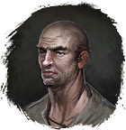
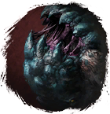
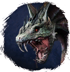

Бутылка Выпивки
Предметы / Ключи
Открыть в интерактивной вики →
| Вес | 1 |
|---|---|
| Цена | 0 |
Описание
Согревает в сильный мороз
Продается у Ловец в Гарнизоне.
Ловец в Гарнизоне.
Требуется 5x для входа в инстанс Видвар
Видвар
Продается у

Берер илиЛовец в Гарнизоне. Требуется 5x для входа в инстанс

ВоугВидвар 
Нидхёгг| Спирт от сильного мороза. С ним ты сможешь сражаться с чудовищами из пещер подо льдом. |
Рецепт
Торговля: 1 + 55k
Торговля: 5 + 275k
Торговля: 1 + 50k
Торговля: 5 + 275k
Торговля: 1 + 50k
Применение
|
Как добыть
|